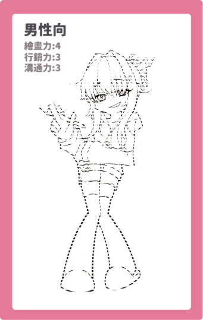
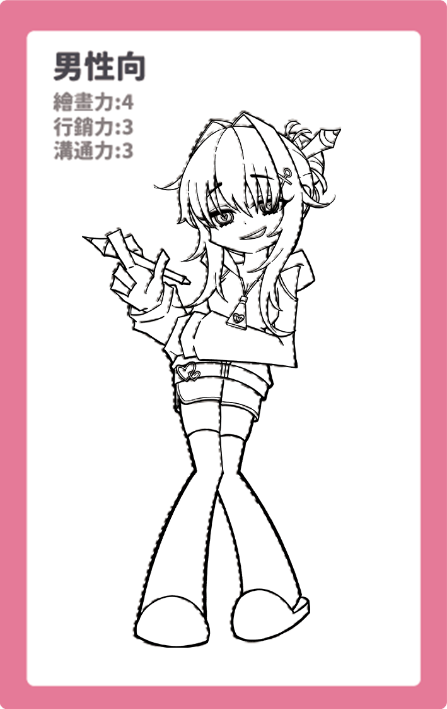
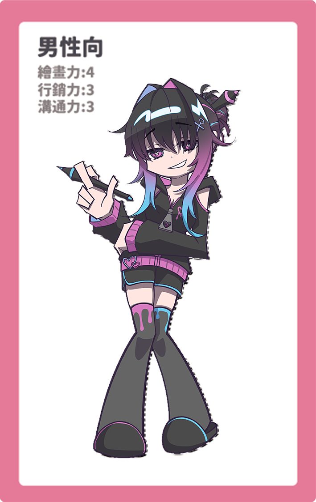
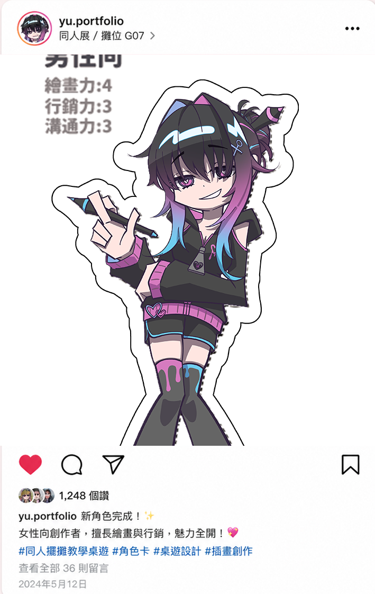
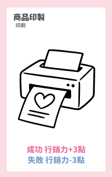
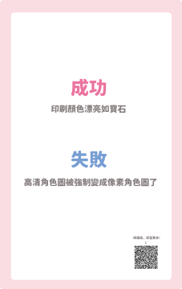
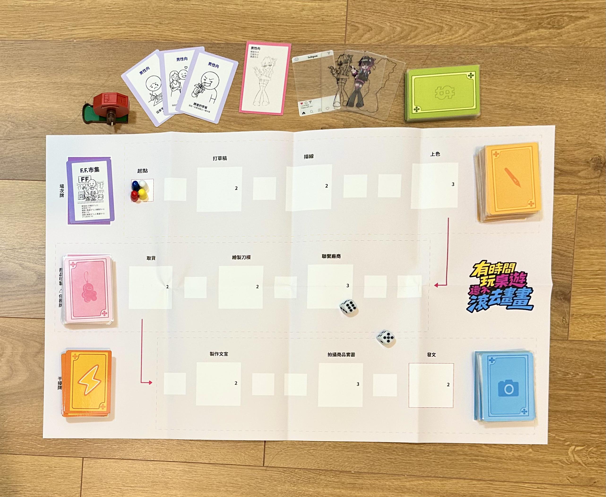

同人擺攤教學桌遊
以同人擺攤文化為主題，將創作、製作、宣傳與販售流程轉化為可遊玩的桌遊體驗。

桌遊設計 / 教育遊戲
2–4 人
約 60 分鐘
企劃、分工管理、卡牌美術、小冊子整理
Concept
本作品以「同人擺攤」為核心情境，將創作者從草稿繪製、商品製作、宣傳到現場販售的流程， 轉化為卡牌、骰子與隨機判定機制。
玩家需要在有限的時間與資源中做出選擇，並面對創作過程中可能出現的突發狀況， 例如印刷失誤、宣傳成效、廠商溝通與現場販售成果。
Learning Goal
透過遊戲，讓玩家理解同人擺攤的完整流程，並體會創作者在準備場次時所面臨的挑戰與決策。
Game Flow
Game System
遊戲以「正經牌」推進各階段任務，透過骰子判定成功與失敗； 「技能牌」與「干擾牌」則增加玩家之間的互動與策略變化。
Components
遊戲配件包含角色卡、技能牌、正經牌、干擾牌、場次牌、行程地圖、能力值指示物、骰子與搖球機。
Card Design

正經牌
任務卡，搭配擲骰與情境回饋呈現成功與失敗。

干擾牌
影響玩家策略與遊戲節奏的互動卡牌。
From Sketch to Publication
角色卡採用透卡堆疊形式，將角色從草稿、線稿、上色到刀模製作與最終發布的過程視覺化， 將創作流程轉化為可被觀看與理解的層次。

Sketch
角色姿態與造型的初步發想。

Line Art
整理輪廓與結構。

Color
完成角色色彩與細節。
Die Cut
設定卡片裁切與透卡疊加結構。

Publish
以社群貼文形式呈現最終成果。
Task Card & Result Card
正經牌作為任務觸發卡，玩家打出後透過擲骰判定結果， 再對應結果說明牌，了解該行動成功或失敗的原因。

Task Card
提出玩家此回合需要執行的任務。

Result Card
依照擲骰結果說明成功或失敗原因。

Collaboration
本專案由團隊共同完成，透過分工與反覆測試，逐步完善遊戲規則與視覺設計。
周書妤（Yuki）
專案發想與整體架構設計，負責角色卡與卡片樣式設計， 並參與卡牌插圖與小冊子整理。
陳佳佑
專案發想與整體架構設計，角色設計，參與卡片插圖與內容製作。
楊羽新
規則草稿撰寫與地圖設計，並與團隊共同優化遊戲流程。
張佳琪
卡片內容與系統設計支援，包含正經牌機制與QR Code整合。
吳庭君
角色設計與卡片樣式製作。
王子宸
卡片內容與系統設計支援